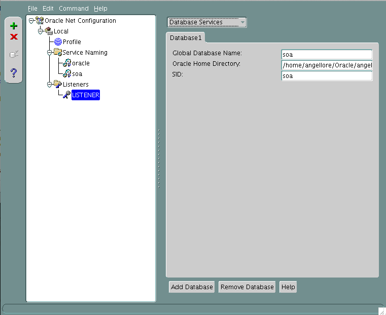

Introducción.
Despues de instalar Oracle 11g R2, con el asistente de instalacion, se creara la BD para SOA suite.
$ dbcaORACLE_BASE="/home/angellore/Oracle/angellore/"
ORACLE_HOME="/home/angellore/Oracle/angellore/product/11.2.0/dbhome_1/"
ORACLE_SID="soa"
ORACLE_HOME_LISTNER=LISTENERLa creacion de la BD se crea con todos los valores por default, y solo cambiando el dominio y SID por soa.
Configuracion del listener
El listener default al instalar oracle 11g tiene el nombre 'LISTENER', el cual aprovecharemos para servir las peticiones a la nueva BD soa. Esto se hace desde 'Oracle Net Manager':
$ netmgrDebemos modificar para que los valores queden de la siguiente forma

Finalmente, tenemos que iniciar (o reiniciar) el listener para que tome efecto el cambio y probamos la conexion a la BD.
$ lsnrctl start
$ sqlplus sys@soa AS SYSDBAInicio automatico de BD
Primero debemos crear el script de inicio para el nivel de ejecucion 5 (o 3 segun sea el caso)
#!/bin/sh
#
# /etc/rc.d/init.d/oracle
# Description: Starts and stops the Oracle database, listeners and Enterprise Manager
# See how we were called.
case "$1" in
start)
echo "Starting Oracle"
echo -n "Starting Oracle Databases: "
su angellore -c dbstart >> /tmp/oracle.log
echo "Done."
echo -n "Starting Oracle Listeners: "
su angellore -c "lsnrctl start" >> /tmp/oracle.log
echo "Done."
echo -n "Starting Oracle Enterprise Manager: "
su angellore -c "emctl start dbconsole" >> /tmp/oracle.log
echo "Done."
touch /var/lock/subsys/oracle
;;
stop)
echo "Shutting Down Oracle"
echo -n "Shutting Down Oracle Enterprise Manager: "
su angellore -c "emctl stop dbconsole" >> /tmp/oracle.log
echo "Done."
echo -n "Shutting Down Oracle Listeners: "
su angellore -c "lsnrctl stop" >> /tmp/oracle.log
echo "Done."
rm -f /var/lock/subsys/oracle
echo -n "Shutting Down Oracle Databases: "
su angellore -c dbshut >> /tmp/oracle.log
echo "Done."
;;
*)
echo "Usage: oracle {start|stop|restart}"
esacDespues indicamos en /etc/oratab que instancias deben iniciarse automaticamente :
# This file is used by ORACLE utilities. It is created by root.sh
# and updated by the Database Configuration Assistant when creating
# a database.
# A colon, ':', is used as the field terminator. A new line terminates
# the entry. Lines beginning with a pound sign, '#', are comments.
#
# Entries are of the form:
# $ORACLE_SID:$ORACLE_HOME::
#
# The first and second fields are the system identifier and home
# directory of the database respectively. The third filed indicates
# to the dbstart utility that the database should , "Y", or should not,
# "N", be brought up at system boot time.
#
# Multiple entries with the same $ORACLE_SID are not allowed.
#
#
oracle:/home/angellore/Oracle/angellore/product/11.2.0/dbhome_1:Y
soa:/home/angellore/Oracle/angellore/product/11.2.0/dbhome_1:Y $ mount -t tmpfs shmfs -o size=4g /dev/shm && echo "shmfs /dev/shm tmpfs size=4g 0" >> /etc/fstab